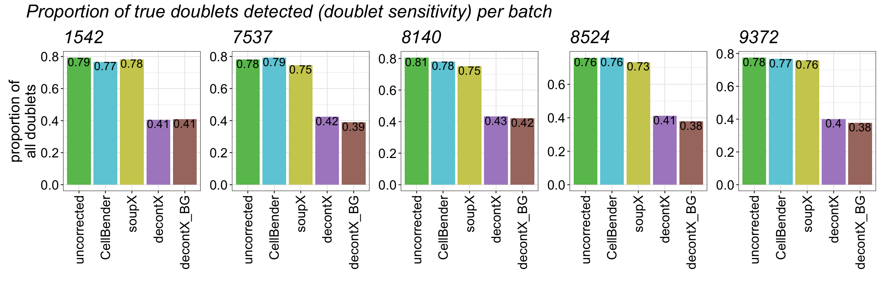
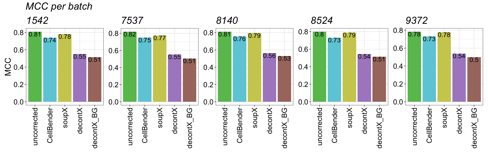
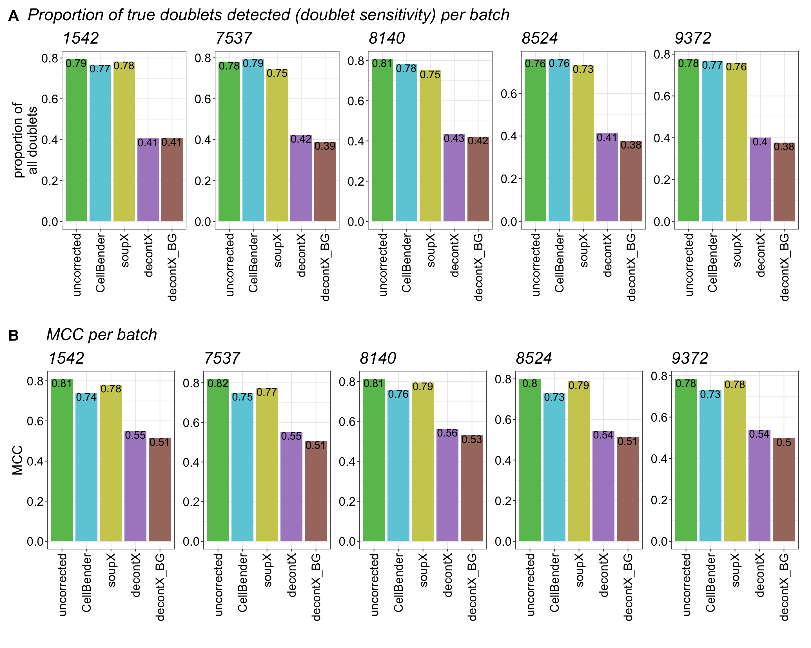

Last updated: 2026-10-12
Checks: 7 0
Knit directory:
ambient_doublet_singlecell/
This reproducible R Markdown analysis was created with workflowr (version 1.7.1). The Checks tab describes the reproducibility checks that were applied when the results were created. The Past versions tab lists the development history.
Great! Since the R Markdown file has been committed to the Git repository, you know the exact version of the code that produced these results.
Great job! The global environment was empty. Objects defined in the global environment can affect the analysis in your R Markdown file in unknown ways. For reproduciblity it’s best to always run the code in an empty environment.
The command set.seed(20260605) was run prior to running
the code in the R Markdown file. Setting a seed ensures that any results
that rely on randomness, e.g. subsampling or permutations, are
reproducible.
Great job! Recording the operating system, R version, and package versions is critical for reproducibility.
Nice! There were no cached chunks for this analysis, so you can be confident that you successfully produced the results during this run.
Great job! Using relative paths to the files within your workflowr project makes it easier to run your code on other machines.
Great! You are using Git for version control. Tracking code development and connecting the code version to the results is critical for reproducibility.
The results in this page were generated with repository version 39765c4. See the Past versions tab to see a history of the changes made to the R Markdown and HTML files.
Note that you need to be careful to ensure that all relevant files for
the analysis have been committed to Git prior to generating the results
(you can use wflow_publish or
wflow_git_commit). workflowr only checks the R Markdown
file, but you know if there are other scripts or data files that it
depends on. Below is the status of the Git repository when the results
were generated:
Ignored files:
Ignored: .DS_Store
Ignored: .RData
Ignored: .Renviron
Ignored: .Rhistory
Ignored: .Rproj.user/
Ignored: CLAUDE.md
Ignored: analysis/figures_v1/
Ignored: analysis/figures_v2/
Ignored: analysis/figures_v3/
Ignored: analysis/obsolete/
Ignored: analysis/untracked_BAL_inflammation_10x_HTO_clean_decontX_different_doublet_settings.Rmd
Ignored: analysis/untracked_BAL_inflammation_10x_HTO_clean_soupX_different_doublet_settings.Rmd
Ignored: analysis/untracked_BrainCortex_nuclei_10x_QC_filtering_deMULTIplex2.Rmd
Ignored: analysis/untracked_BrainCortex_nuclei_10x__LungCancer_10x_CMO_check_CMO_ADT_distribution.Rmd
Ignored: analysis/untracked_BrainCortex_nuclei_10x_clean_decontX_different_doublet_settings.Rmd
Ignored: analysis/untracked_BrainCortex_nuclei_10x_clean_soupX_different_doublet_settings.Rmd
Ignored: analysis/untracked_BrainCortex_nuclei_10x_evaluate_doublet_calling_deMULTIplex2.Rmd
Ignored: analysis/untracked_BrainCortex_nuclei_10x_inspect_SampleOfOrigin_false_singlets.Rmd
Ignored: analysis/untracked_BrainCortex_nuclei_10x_run_deMULTIplex2.Rmd
Ignored: analysis/untracked_LungCancer_10x_CMO_clean_decontX_different_doublet_settings.Rmd
Ignored: analysis/untracked_LungCancer_10x_CMO_clean_soupX_different_doublet_settings.Rmd
Ignored: analysis/untracked_figure_05.Rmd
Ignored: analysis/untracked_qc_filtered_ambient/
Ignored: claude_logs/
Ignored: code/TMP_notes.R
Ignored: code/ambient_tools/
Ignored: code/make_figures.R
Ignored: code/useful_scripts/zenodo_export.R
Ignored: output/.DS_Store
Ignored: output/data/
Ignored: output/data_zenodo/
Ignored: output/figures/
Ignored: output/package_refs/
Ignored: output/results/.DS_Store
Ignored: output/results/BAL_inflammation_10x/.DS_Store
Ignored: output/results/BrainCortex_nuclei_10x/.DS_Store
Ignored: output/results/BrainCortex_nuclei_10x/DoubletCallingPerformance/.DS_Store
Ignored: output/results/BrainCortex_nuclei_10x/DoubletCallingPerformance/untracked_BrainCortex_nuclei_10x_TESTING_deMULTIplex2_correctAssignments_MCC.csv
Ignored: output/results/BrainCortex_nuclei_10x/DoubletCallingPerformance/untracked_BrainCortex_nuclei_10x_correctAssignments_MCC_qc_filtered_ambient.csv
Ignored: output/results/LungCancer_10x/.DS_Store
Ignored: output/results/LungCancer_10x/DoubletCallingPerformance/.DS_Store
Ignored: output/results/LungCancer_10x/DoubletCallingPerformance/untracked_LungCancer_10x_correctAssignments_MCC_qc_filtered_ambient.csv
Ignored: output/results/Tonsils_10xFlex/.DS_Store
Ignored: output/results/Tonsils_10xFlex/Engineered/.DS_Store
Ignored: renv/
Ignored: scp_file.txt
Note that any generated files, e.g. HTML, png, CSS, etc., are not included in this status report because it is ok for generated content to have uncommitted changes.
These are the previous versions of the repository in which changes were
made to the R Markdown (analysis/supp_figure_02.Rmd) and
HTML (docs/supp_figure_02.html) files. If you’ve configured
a remote Git repository (see ?wflow_git_remote), click on
the hyperlinks in the table below to view the files as they were in that
past version.
| File | Version | Author | Date | Message |
|---|---|---|---|---|
| Rmd | 39765c4 | Michelle Meier | 2026-10-12 | fix typo in figure title |
| Rmd | a915461 | Michelle Meier | 2026-10-10 | Initial public release |
| html | a915461 | Michelle Meier | 2026-10-10 | Initial public release |
This markdown makes the plots for Supplementary Figure 2: Doublet detection performance for each batch of the engineered tonsil dataset. This includes per batch results for doublet specificity and MCC.
Plots shown in this figure support figure 3.
suppressPackageStartupMessages({
library(SingleCellExperiment)
library(tidyverse)
library(readr)
library(here)
library(Seurat)
library(scater)
library(qs2)
library(DropletUtils)
library(patchwork)
library(rstatix)
library(yardstick)
library(caret)
library(ComplexHeatmap)
library(ggrepel)
library(png)
})Warning: package 'ggplot2' was built under R version 4.5.2files <- list.dirs(path = here("output/data/Tonsils_10xFlex/Engineered/"), full.names = T, recursive = F)
files <- files[grepl("Tonsils_10xFlex_engineered_12k_0.15p", files)]run_read_data <- function(path){
#original metadata (from uncorrected)
meta <- read_tsv(paste0(str_match(path, "^(.*?\\d+s)(?:_.*)?$")[,2], "/metadata.tsv"), show_col_types = F)
#doublet calling results
doublet_file <- list.files(path = paste0(path, "/doublet_calls/"),
pattern = "scDblFinder",
full.names = T)
dbl_res <- read_csv(doublet_file, show_col_types = F)
#combine, full
if ("Barcode" %in% names(meta)){
combined_res <- full_join(dbl_res, meta)
} else {
combined_res <- full_join(dbl_res, meta %>% mutate(., Barcode=GEM_barcode))
}
#replace NAs in doublet calling with "Missing"
combined_res$scDblFinder_DropletType[is.na(combined_res$scDblFinder_DropletType)] <- "Missing"
#add metadata
if (is.na(str_match(basename(path), "\\d+s(?:_(.+))?$")[,2])){
combined_res$ambient_tool <- "uncorrected"
} else {
combined_res$ambient_tool <- str_match(basename(path), "\\d+s(?:_(.+))?$")[,2]
}
combined_res$batch <- stringr::str_extract(basename(path), "\\d+s(?=($|_))")
return(combined_res)
} Run for all.
list_results <- lapply(files, run_read_data)
names(list_results) <- basename(files)These performance metrics were computed in this file.
performance_results <- read_tsv(here("output/results/Tonsils_10xFlex/Engineered/DoubletCallingPerformance/Tonsils_10xFlex_engineered_12k_0.15p_AllBatches_correctAssignments_MCC.csv"), show_col_types = F, col_types = c("ccnnnnnnnnnnnn"))plot_sizing <- theme_bw() +theme(axis.title = element_text(size = 18),
axis.text = element_text(size = 16, colour = "black"),
plot.title = element_text(size = 22),
plot.subtitle= element_text(size = 18),
legend.text = element_text(size = 14),
legend.title = element_blank())
plot_sizing_keep_legend <- theme_bw() +theme(axis.title = element_text(size = 18),
axis.text = element_text(size = 16, colour = "black"),
plot.title = element_text(size = 22),
legend.text = element_text(size = 14),
legend.title = element_text(size=16))
rotate_x <- theme(axis.text.x = element_text(angle = 90, vjust = 0.5, hjust=1))
strip_fix <- theme(strip.background = element_rect(fill = "white"),
strip.text = element_text(size = 14))
title_size <- theme(plot.title = element_text(size = 22, face = "italic"))# method colours
ambient_tools_colours <- c( "#67BF5C", "#AD8BC9",
"#A8786E", "#CDCC5D", "#6DCCDA")
names(ambient_tools_colours) <- c("uncorrected", "decontX", "decontX_BG",
"soupX", "CellBender")
ambient_tool_levels <- c("uncorrected", "CellBender", "soupX", "decontX", "decontX_BG")
# doublet/singlet colours
doublet_colours <- c("#2E91E5", "#EB663B"); names(doublet_colours) <- c("singlet", "doublet")save_dir <- here("output/figures/v4")Initate list used to store plots for the figures.
main_figure <- list()
supp_figure <- list()plot_list <- lapply(unique(performance_results$batch), function(BATCH){
performance_results %>%
filter(., batch == BATCH) %>%
ggplot(., aes(y = doublet_Sensitivity, x= factor(ambient_tool, levels = ambient_tool_levels), fill=ambient_tool)) +
geom_bar(stat="identity") +
plot_sizing+ rotate_x + ylab("proportion of\nall doublets") + xlab("") + ggtitle(BATCH) +
geom_text(aes(label=round(doublet_Sensitivity, 2)), vjust=1, size=5)+
scale_fill_manual(values = ambient_tools_colours) + theme(legend.position = "none")
})
supp_figure$batch_retained_doublet <-wrap_plots(plot_list, guides = "collect", axis_titles = "collect", nrow=1) + plot_annotation("Proportion of true doublets detected (doublet sensitivity) per batch", theme = theme(plot.title = element_text(hjust = 0.05))) & title_size
supp_figure$batch_retained_doublet
| Version | Author | Date |
|---|---|---|
| a915461 | Michelle Meier | 2026-10-10 |
plot_list <- lapply(unique(performance_results$batch), function(BATCH){
performance_results %>%
filter(., batch == BATCH) %>%
ggplot(., aes(y = mcc, x= factor(ambient_tool, levels = ambient_tool_levels), fill=ambient_tool)) +
geom_bar(stat="identity") +
plot_sizing+ rotate_x + ylab("MCC") + xlab("") + ggtitle(BATCH) +
geom_text(aes(label=round(mcc, 2)), vjust=1, size=5)+
scale_fill_manual(values = ambient_tools_colours) + theme(legend.position = "none")
})
supp_figure$batch_MCC <- wrap_plots(plot_list, guides = "collect", axis_titles = "collect", nrow=1) + plot_annotation("MCC per batch", theme = theme(plot.title = element_text(hjust = 0.05))) & title_size
supp_figure$batch_MCC
| Version | Author | Date |
|---|---|---|
| a915461 | Michelle Meier | 2026-10-10 |
row1 <- wrap_elements(full = supp_figure$batch_retained_doublet)
row2 <- wrap_elements(full = supp_figure$batch_MCC)
supp_patch <- row1 + row2 + plot_layout(ncol=1)+
plot_annotation(tag_levels = "A") &
theme(
plot.tag = element_text(size = 20, face = "bold")
)
ggsave(plot = supp_patch,
filename = "Supp_Figure_02_EngineeredDataset_DoubletEvaluation_perBatch.png",
path = save_dir,
device = "png",
width = 15,
height =8,
dpi = 1200,
bg = "transparent")
supp_patch
| Version | Author | Date |
|---|---|---|
| a915461 | Michelle Meier | 2026-10-10 |
Exporting a excel spreadsheet with all performance metrics for all datasets.
writexl::write_xlsx(
list(Sheet1 = performance_results), # list names become the sheet names
path = here(save_dir ,"SupplementaryTable_01_allPerformanceMetrics_engineeredDataset_all_batches.xlsx")
)
sessionInfo()R version 4.5.0 (2025-04-11)
Platform: aarch64-apple-darwin20
Running under: macOS Sequoia 15.7.9
Matrix products: default
BLAS: /Library/Frameworks/R.framework/Versions/4.5-arm64/Resources/lib/libRblas.0.dylib
LAPACK: /Library/Frameworks/R.framework/Versions/4.5-arm64/Resources/lib/libRlapack.dylib; LAPACK version 3.12.1
locale:
[1] en_US.UTF-8/en_US.UTF-8/en_US.UTF-8/C/en_US.UTF-8/en_US.UTF-8
time zone: Australia/Melbourne
tzcode source: internal
attached base packages:
[1] grid stats4 stats graphics grDevices datasets utils
[8] methods base
other attached packages:
[1] png_0.1-8 ggrepel_0.9.6
[3] ComplexHeatmap_2.24.0 caret_7.0-1
[5] lattice_0.22-6 yardstick_1.3.2
[7] rstatix_0.7.2 patchwork_1.3.2
[9] DropletUtils_1.28.0 qs2_0.1.5
[11] scater_1.36.0 scuttle_1.18.0
[13] Seurat_5.3.1.0000 SeuratObject_5.1.0
[15] sp_2.2-0 here_1.0.1
[17] lubridate_1.9.4 forcats_1.0.0
[19] stringr_1.5.1 dplyr_1.1.4
[21] purrr_1.2.0 readr_2.1.5
[23] tidyr_1.3.1 tibble_3.3.0
[25] ggplot2_4.0.3 tidyverse_2.0.0
[27] SingleCellExperiment_1.30.1 SummarizedExperiment_1.38.1
[29] Biobase_2.68.0 GenomicRanges_1.60.0
[31] GenomeInfoDb_1.44.0 IRanges_2.42.0
[33] S4Vectors_0.46.0 BiocGenerics_0.54.0
[35] generics_0.1.4 MatrixGenerics_1.20.0
[37] matrixStats_1.5.0 workflowr_1.7.1
loaded via a namespace (and not attached):
[1] fs_2.1.0 spatstat.sparse_3.1-0
[3] doParallel_1.0.17 httr_1.4.7
[5] RColorBrewer_1.1-3 tools_4.5.0
[7] sctransform_0.4.2 backports_1.5.0
[9] R6_2.6.1 HDF5Array_1.36.0
[11] lazyeval_0.2.2 uwot_0.2.3
[13] GetoptLong_1.0.5 rhdf5filters_1.20.0
[15] withr_3.0.2 gridExtra_2.3
[17] progressr_0.15.1 textshaping_1.0.1
[19] cli_3.6.6 spatstat.explore_3.4-3
[21] fastDummies_1.7.5 labeling_0.4.3
[23] sass_0.4.10 S7_0.2.1
[25] spatstat.data_3.1-6 ggridges_0.5.6
[27] pbapply_1.7-2 systemfonts_1.2.3
[29] R.utils_2.13.0 parallelly_1.45.0
[31] limma_3.64.1 rstudioapi_0.17.1
[33] shape_1.4.6.1 vroom_1.6.5
[35] ica_1.0-3 spatstat.random_3.4-1
[37] car_3.1-3 Matrix_1.7-3
[39] ggbeeswarm_0.7.2 abind_1.4-8
[41] R.methodsS3_1.8.2 lifecycle_1.0.5
[43] whisker_0.4.1 yaml_2.3.10
[45] edgeR_4.6.2 carData_3.0-5
[47] rhdf5_2.52.1 recipes_1.3.1
[49] SparseArray_1.8.0 Rtsne_0.17
[51] promises_1.3.3 dqrng_0.4.1
[53] crayon_1.5.3 miniUI_0.1.2
[55] beachmat_2.24.0 cowplot_1.1.3
[57] pillar_1.10.2 knitr_1.50
[59] rjson_0.2.23 future.apply_1.20.0
[61] codetools_0.2-20 glue_1.8.0
[63] getPass_0.2-4 spatstat.univar_3.1-3
[65] data.table_1.17.4 vctrs_0.6.5
[67] spam_2.11-1 gtable_0.3.6
[69] cachem_1.1.0 gower_1.0.2
[71] xfun_0.52 prodlim_2025.04.28
[73] S4Arrays_1.8.1 mime_0.13
[75] survival_3.8-3 timeDate_4041.110
[77] iterators_1.0.14 hardhat_1.4.2
[79] lava_1.8.1 statmod_1.5.0
[81] fitdistrplus_1.2-2 ipred_0.9-15
[83] ROCR_1.0-11 nlme_3.1-168
[85] bit64_4.6.0-1 RcppAnnoy_0.0.22
[87] rprojroot_2.1.1 bslib_0.9.0
[89] irlba_2.3.5.1 rpart_4.1.24
[91] vipor_0.4.7 KernSmooth_2.23-26
[93] colorspace_2.1-1 nnet_7.3-20
[95] tidyselect_1.2.1 processx_3.8.6
[97] bit_4.6.0 compiler_4.5.0
[99] git2r_0.36.2 BiocNeighbors_2.2.0
[101] h5mread_1.0.1 DelayedArray_0.34.1
[103] plotly_4.10.4 stringfish_0.17.0
[105] scales_1.4.0 lmtest_0.9-40
[107] callr_3.7.6 digest_0.6.37
[109] goftest_1.2-3 spatstat.utils_3.1-4
[111] rmarkdown_2.29 XVector_0.48.0
[113] htmltools_0.5.8.1 pkgconfig_2.0.3
[115] sparseMatrixStats_1.20.0 fastmap_1.2.0
[117] GlobalOptions_0.1.2 rlang_1.3.0
[119] htmlwidgets_1.6.4 UCSC.utils_1.4.0
[121] shiny_1.10.0 DelayedMatrixStats_1.30.0
[123] farver_2.1.2 jquerylib_0.1.4
[125] zoo_1.8-14 jsonlite_2.0.0
[127] BiocParallel_1.42.1 ModelMetrics_1.2.2.2
[129] R.oo_1.27.1 BiocSingular_1.24.0
[131] magrittr_2.0.4 Formula_1.2-5
[133] GenomeInfoDbData_1.2.14 dotCall64_1.2
[135] Rhdf5lib_1.30.0 Rcpp_1.1.2
[137] viridis_0.6.5 reticulate_1.42.0
[139] pROC_1.18.5 stringi_1.8.7
[141] MASS_7.3-65 plyr_1.8.9
[143] parallel_4.5.0 listenv_0.9.1
[145] deldir_2.0-4 splines_4.5.0
[147] tensor_1.5 circlize_0.4.16
[149] hms_1.1.3 locfit_1.5-9.12
[151] ps_1.9.1 igraph_2.1.4
[153] spatstat.geom_3.4-1 RcppHNSW_0.6.0
[155] reshape2_1.4.4 ScaledMatrix_1.16.0
[157] evaluate_1.0.5 RcppParallel_5.1.10
[159] renv_1.1.4 BiocManager_1.30.26
[161] tzdb_0.5.0 foreach_1.5.2
[163] httpuv_1.6.16 RANN_2.6.2
[165] polyclip_1.10-7 clue_0.3-66
[167] future_1.58.0 scattermore_1.2
[169] rsvd_1.0.5 broom_1.0.8
[171] xtable_1.8-4 RSpectra_0.16-2
[173] later_1.4.2 ragg_1.4.0
[175] class_7.3-23 viridisLite_0.4.2
[177] beeswarm_0.4.0 writexl_2.0.1
[179] cluster_2.1.8.1 timechange_0.3.0
[181] globals_0.18.0